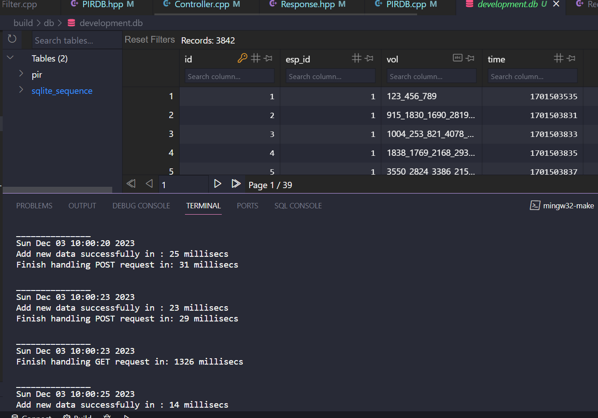

Yêu cầu về server
Tổng quan
Vấn đề 1: getDataWithID()
Trong phần models/PIRDB.* là class PIRDB cần 1 hàm để trả về dữ liệu 1 dòng
với đầu vào là ID của dòng đó.
Vấn đề 2: về tốc độ xử lý GET Request
Khi dữ liệu bắt đầu lớn ( từ 3000 rows trở đi ), việc ghi thêm row không bị giảm tốc độ nhưng việc lấy api từ GET Request bị chậm
1. Triển khai đa luồng với server
2. Cần 1 log file để thống kê lại tất cả các thời gian xử lý các request
Đối với Dũng và Mừng
Task 1: Triển khai class RecordRow và hàm PIRDB::recordWithID(int ID)
Triển khai class RecordRow
models.hpp
/* TO-DO: Implement Request Row class */
class RecordRow {
private:
int _id, _espID, _timestamp, _voltage[VOLNUM];
public:
/* Init function */
RecordRow(int id, int espID, int timestamp, int voltage[VOLNUM]);
/* Note: id, espID, timestamp, voltage is initialized only in init function (above), after initialized, they are READONLY */ int id();
int espID();
int timestamp();
std::vector voltage();
};
Trên đây là phần code trong file .hpp khai báo tên class và các method
Dũng và Mừng sẽ hoàn thiện phần code trong file PIRDB.cpp, các hàm cần viết là các hàm sau:
/* Code goes here */
/* TO-DO: Implement method recordWithID() */
RecordRow PIRDB::recordWithID(int ID) {
/* Code goes here */
};
/* TO-DO: Implement class RecordRow */
RecordRow::RecordRow(int id, int espID, int timestamp, int voltage[VOLNUM]){
/* Code goes here */
};
int RecordRow::id(){
/* Code goes here */
return this->_id;
};
int RecordRow::espID(){
/* Code goes here */
};
int RecordRow::timestamp(){
/* Code goes here */
};
std::vector RecordRow::voltage(){
/* Code goes here */
};
* class RecordRow đặc trưng cho dữ liệu của 1 hàng trong DB. Mọi người sẽ implement
class này trước.
- class RecordRow có hàm khởi tạo RecordRow::RecordRow(int id, int espID, int timestamp, int voltage[VOLNUM])
- Với 4 tham số đầu vào:
là id, espID, timestamp,voltage[VOLNUM] , khi gọi hàm khởi tạo, 4 giá trị của tham số truyền vào sẽ được gán cho 4 biến private.
- các hàm public: id(), espID(), timestamp(), voltage() chỉ để trả về giá trị 4 biến private trên
* Sau đó, mọi người sẽ triển khai hàm RecordRow PIRDB::recordWithID(int ID)
- Hàm này là 1 method của class PIRDB, lấy dữ liệu từ 1 dòng của Database, trả về một đối tượng (object) thuộc class RecordRow
- Tham số đầu vào: int ID là ID của dòng dữ liệu cần lấy
- Đầu ra là 1 đối tượng thuộc class PIRDB có các thuộc tính espID, voltage, time tương ứng với ID.
- Thân hàm: lấy dữ liệu từ database sử dụng lệnh select và đối tượng this->db, xử lý dữ liệu lấy ra,
chuyển dữ liệu lấy ra thành dạng 1 đối tượng RecordRow và return đối tượng mới này.
*Gợi ý:- quy trình lấy dữ liệu từ database giống ý hệt quy trình trong hàm PIRDB::getDataWithID(int ID),
chỉ khác ở điểm hàm PIRDB::getDataWithID(int ID) trả về một vector với 3 phần tử,
còn hàm PIRDB::recordWithID(int ID) trả về 1 đối tượng thuộc class RecordRow
- Tham khảo những hàm phía trên để code hàm phía dưới
- Không viết thêm bất cứ function ngoài nào, chỉ điền vào những func đã có